Qu'il s'agisse d'une naissance, d'un anniversaire, de remercier un proche ou
tout simplement pour faire plaisir, il y a toujours un évènement à fêter et
chaque occasion à son bouquet.
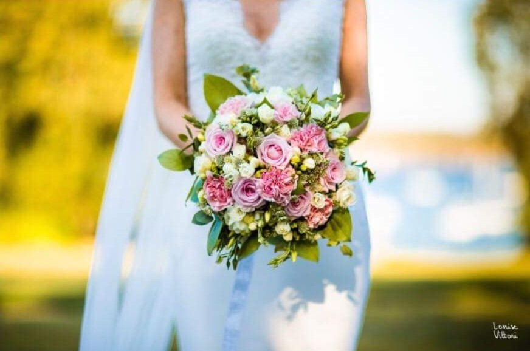
Mariage
Un mariage réussi passe par une décoration florale qui vous ressemble. Du
bouquet de la mariée aux décorations de la salle, nous vous accompagnons
dans la création de votre univers floral.
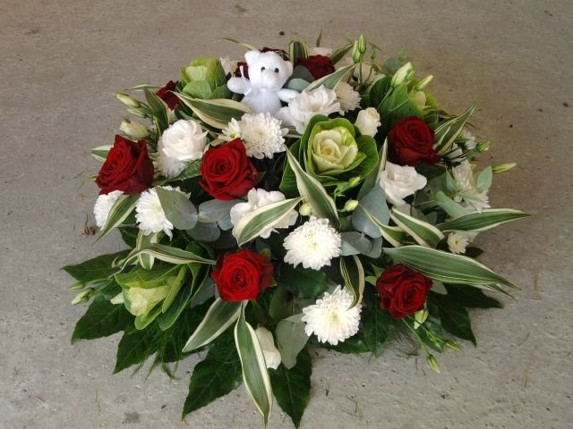
Enterrements
Vous venez de perdre un proche, un ami, les fleurs expriment nos sentiments.
C'est avec discrétion que nous vous accompagnerons dans vos choix floraux
afin de réaliser au mieux votre hommage personnel.
Suppléments
De plus vous pouvez joindre à chacune de vos commandes des suppléments :
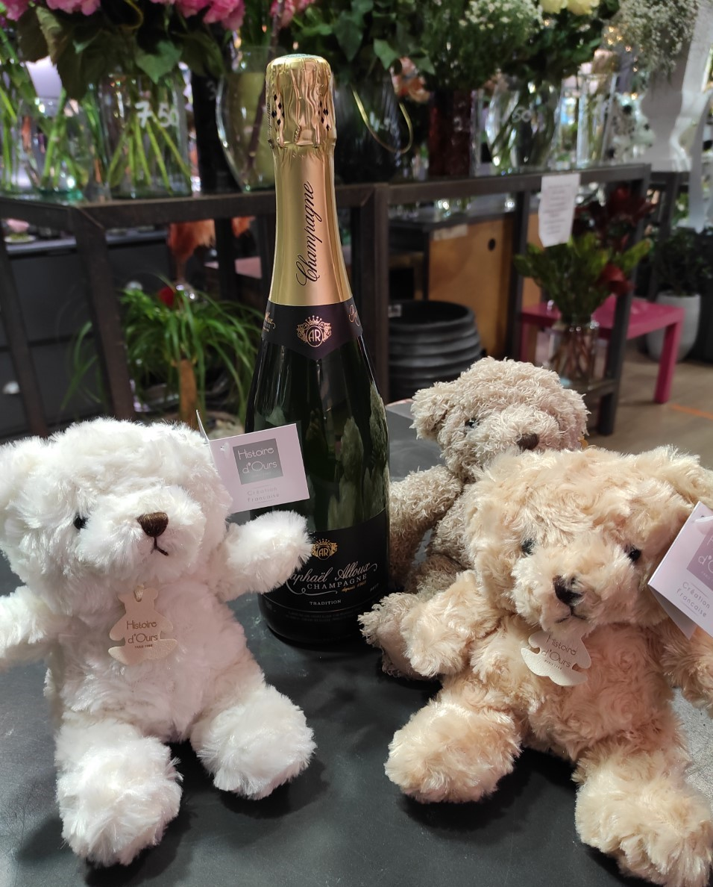
Une bouteille de champagne sera toujours la bienvenue pour faire plaisir
en plus de vos bouquets ! (à partir de 33€)
Pour une naissance, pensez à ajouter un ourson ! (à partir de 13,90€)
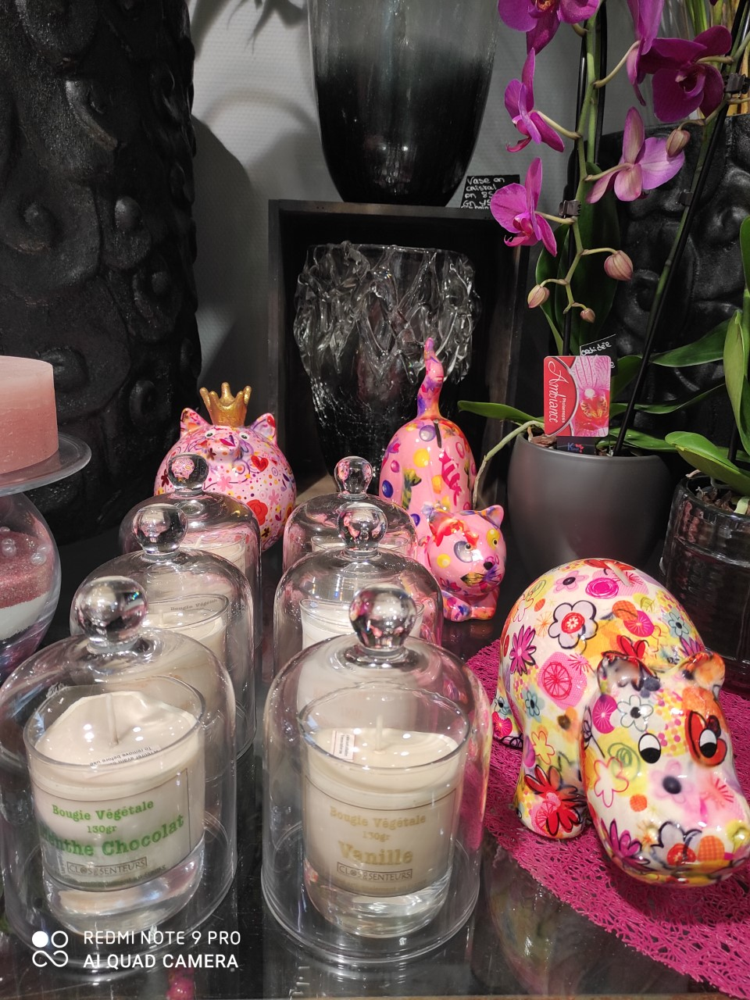
Des tirelires décoratives peuvent être une idée originale de cadeau. ( à
partir de 25.90€)
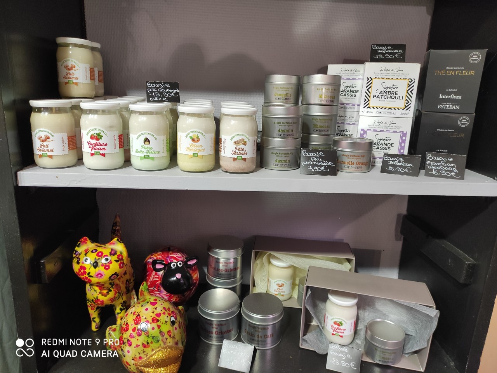
De nombreuses bougies sont disponible (voir parfum et prix directement
en magasin)
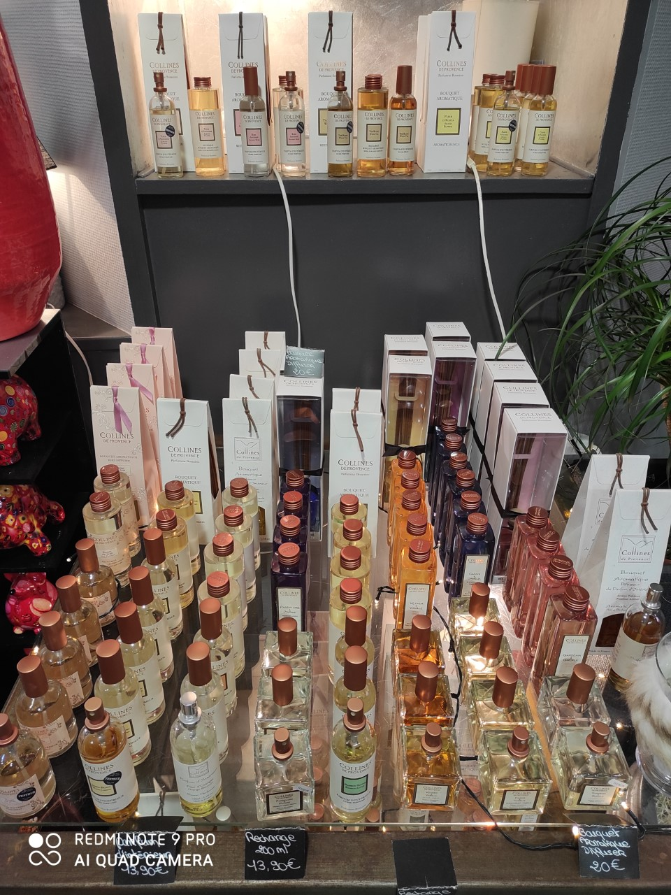
Nous pouvons également accompagner votre commande un parfum
d'ambiance en diffuseur ou vaporisateur (à partir de 13.90€).
Liste de parfum disponible pour les parfums d'ambiance :
Bambou Lotus
Vetiver Vanille
Passiflore Pivoine
Cassis Camélia
Plume de soie
Poudre de riz
Cèdre
Gardénia Giroflé
Thé blanc
Fleurs sechées et stabilisées
Nous proposons un large choix de fleurs sechées et stabilisées.
Les compositions séchées ont une très longue durée de vie et sans aucun
entretien ! Les roses peuvent être conservé jusqu'à 7 ans et les cadres jusqu'à
10 ans.
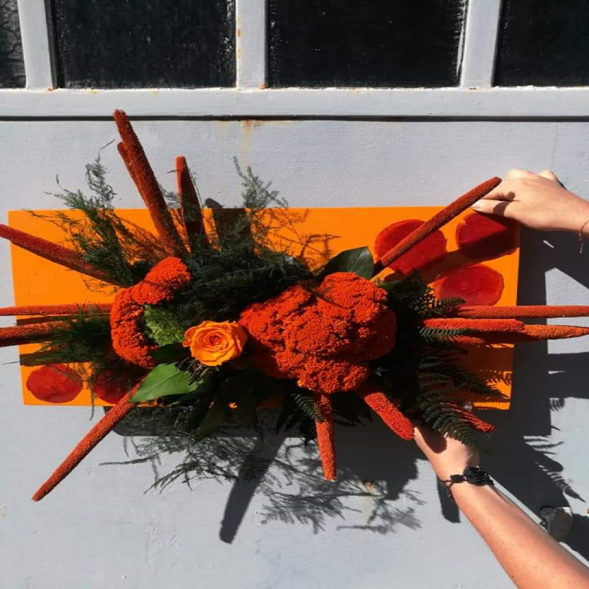
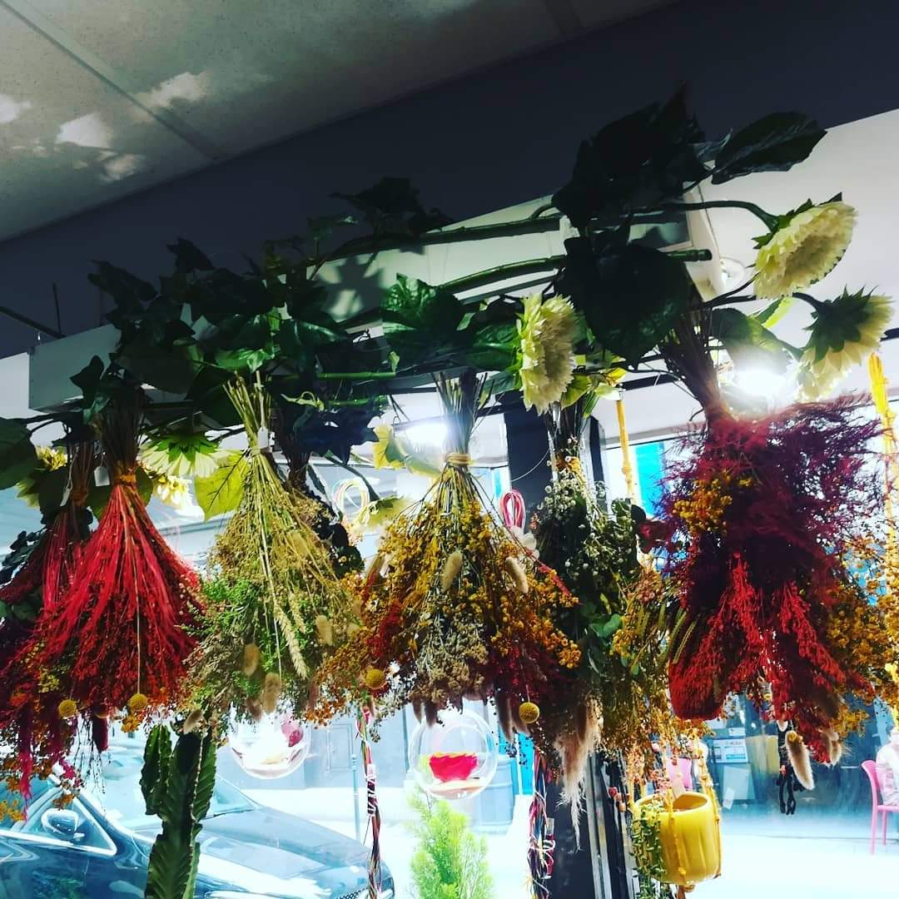
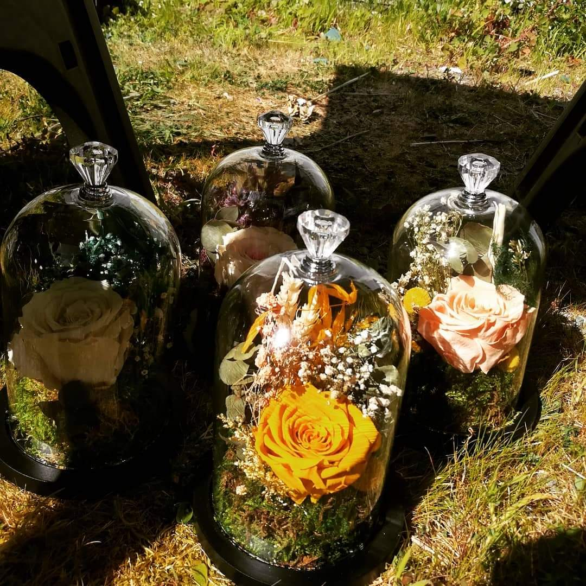
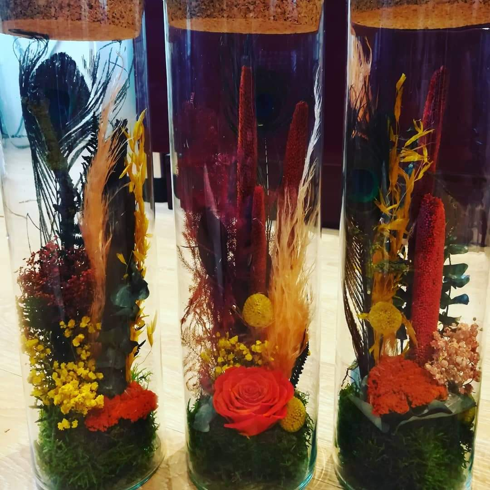
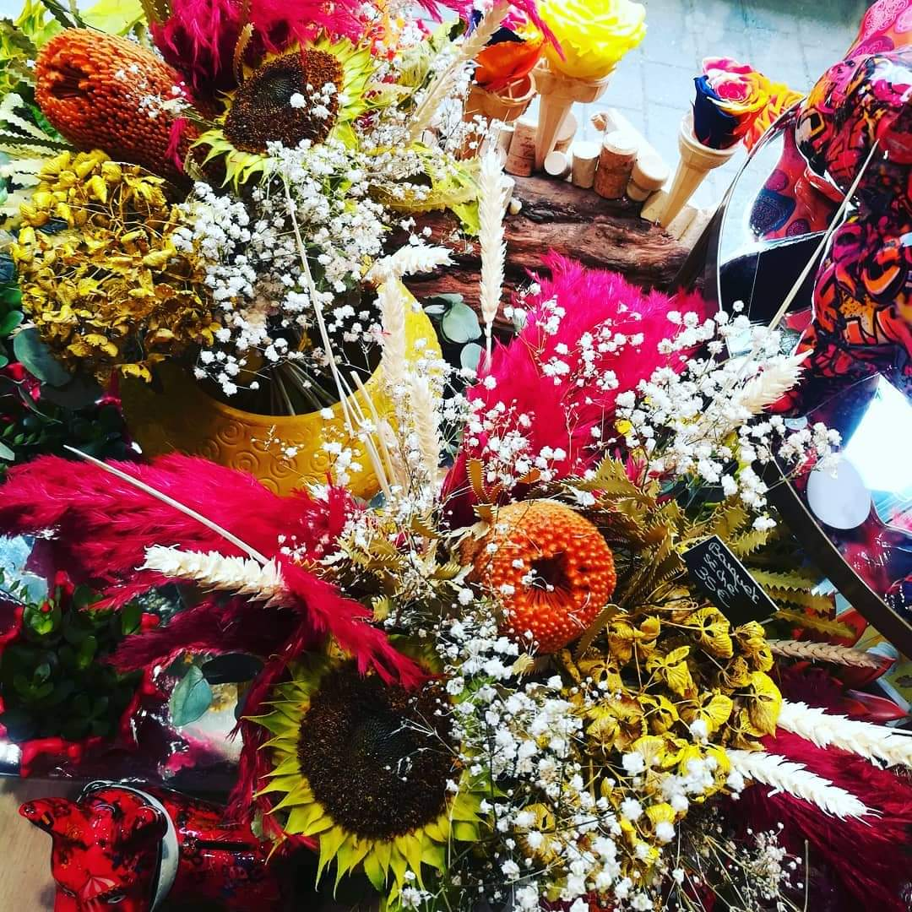
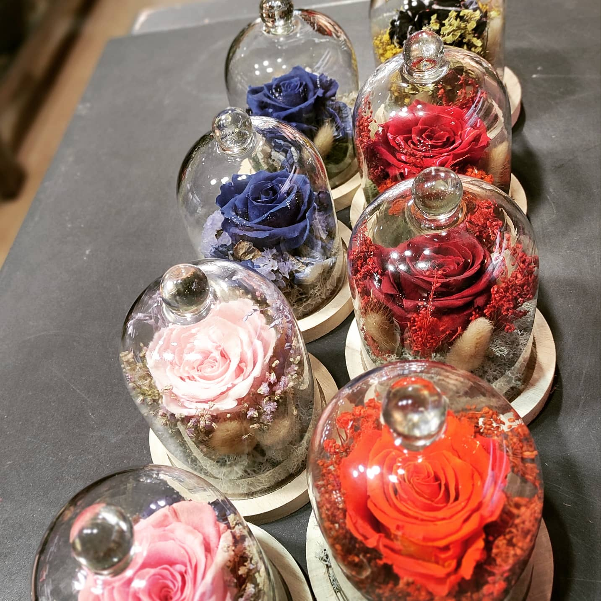
Les coloris pour les roses stabilisées sont selon approvisionnement à partir de
21,90€.
Nos cadre stabilisées peuvent être sur-mesure si vous le
souhaitez.
Bouquet fleurs séchées. Coloris selon approvisionnement à partir de
25€. Nos cloches séchées et couronnes murales sont disponibles en différentes
tailles et coloris. Se renseigner en magasin pour les tarifs.